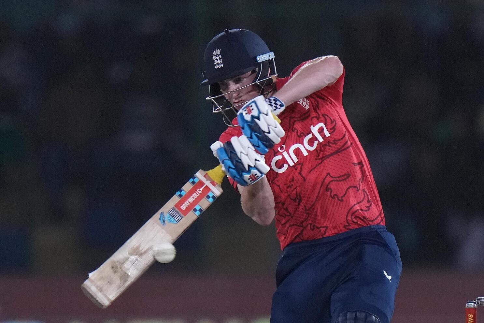
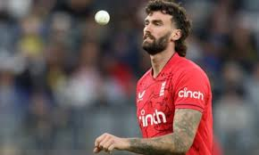

England T20I Team
2010 & 2022 T20 World Cup champions with aggressive play.
About England T20I Team
Country: England
Home Ground: Various (e.g., Lord’s, London)
Captain: Jos Buttler
Coach: Matthew Mott
England’s T20I team is known for its fearless “Bazball” approach, with powerful batting and versatile bowlers. They are two-time T20 World Cup winners.
England Players
Jos Buttler (C)
Captain, wicketkeeper-batsman.
Phil Salt
Opener, top-ranked batsman.
Jonny Bairstow
Batsman, aggressive opener.
Harry Brook
Batsman, rising star.
Liam Livingstone
All-rounder, power-hitter.
Sam Curran
All-rounder, versatile.

Ben Duckett
Batsman, middle-order.
Adil Rashid
Spinner, No.1 T20I bowler.
Jofra Archer
Bowler, express pace.

Reece Topley
Bowler, swing specialist.
Chris Jordan
Bowler, death specialist.